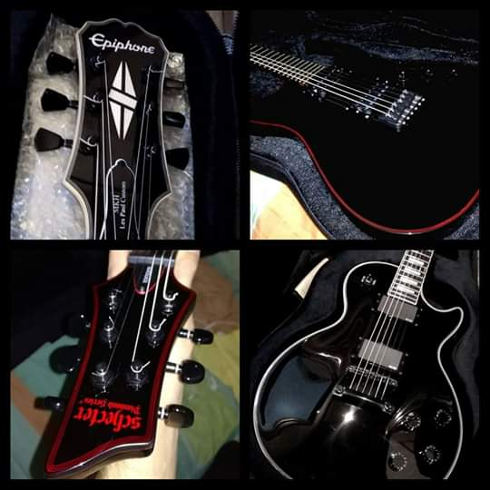

Nuevas guitarras disponibles en tienda
👍
Entra y descubre los nuevos modelos de guitarras que tenemos disponibles recién salidas del taller, entre ellas se encuentran la lujosa Schecter Blackjack C-1 2014 y la Epiphone Les Paul Custom...